Richard e Taynara
Princesa, nesse tempo todo que passamos juntinhos, desde o começo eu sabia que tinha encontrado alguém especial. Mas, com o passar dos dias, percebi que havia encontrado o amor da minha vida. Desde então, me comprometi a fazer tudo o que estivesse ao meu alcance para te fazer feliz.
Sou muito feliz e grato por ter te conhecido. Juntando todos os detalhes de como nos encontramos, até mesmo aquele desenho de quando você tinha 10 anos, percebo que estávamos realmente destinados a ficar juntos. Cada momento que passamos me faz acreditar ainda mais nisso.
Muito obrigado por esses meses incríveis e por todos os que ainda virão. Espero poder te fazer feliz e cuidar de você da melhor maneira possível, oferecendo todo o amor que você merece. Saiba que eu te amo muito e sou completamente apaixonado por você. Meu maior desejo é que possamos construir a nossa vida juntos no futuro, repleta de alegrias e conquistas.
Observação: desculpa, não sou muito bom com as palavras, mas espero que você sinta toda a verdade que vem do meu coração. Te amo muito!
 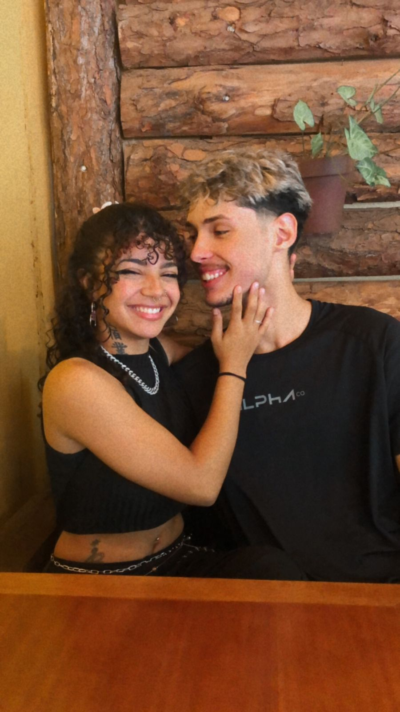
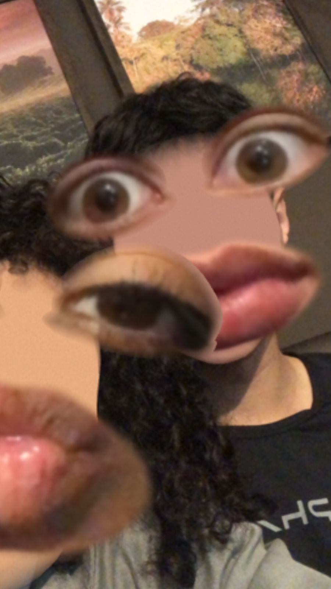
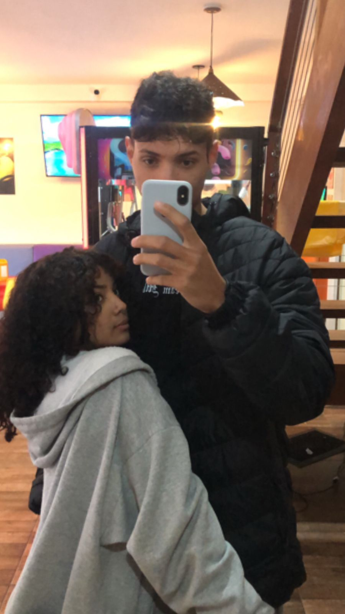
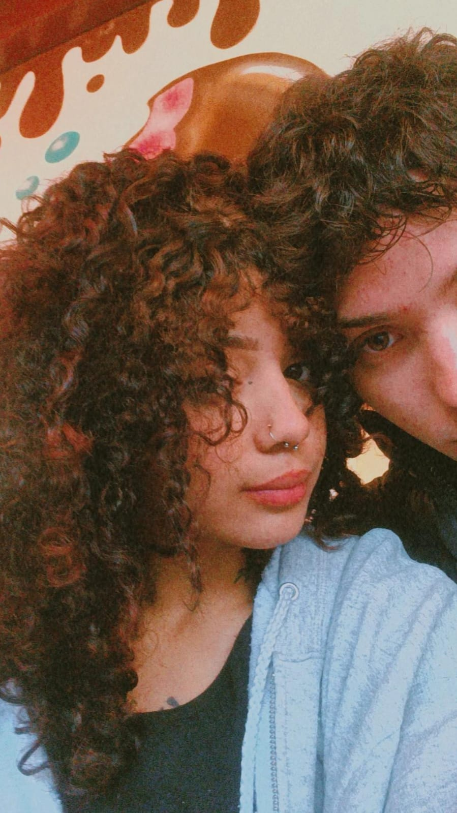
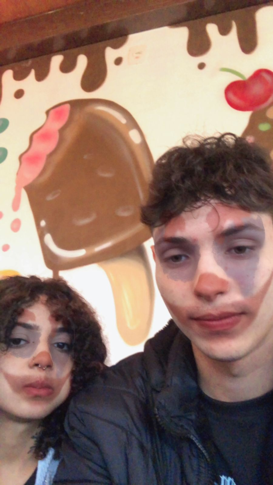
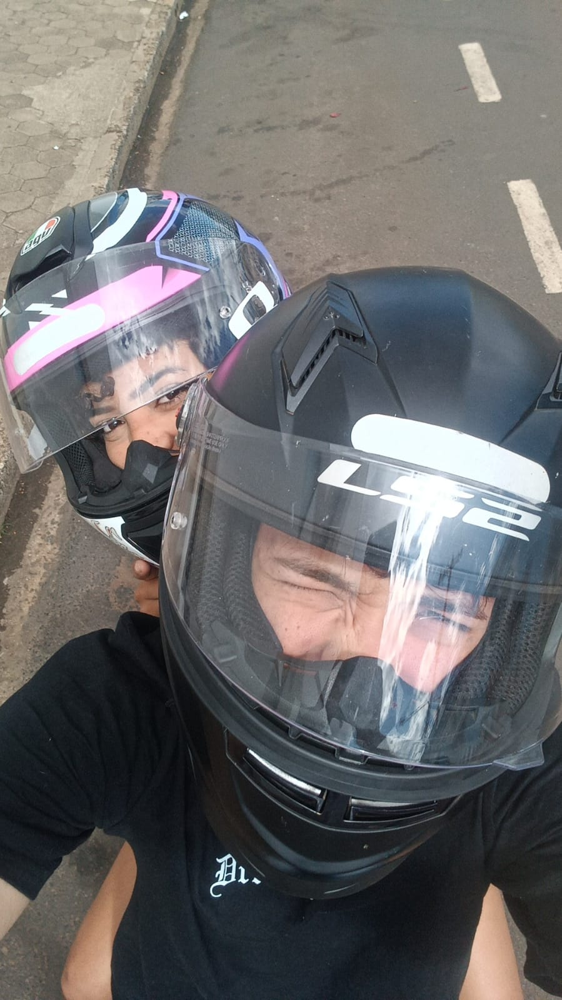
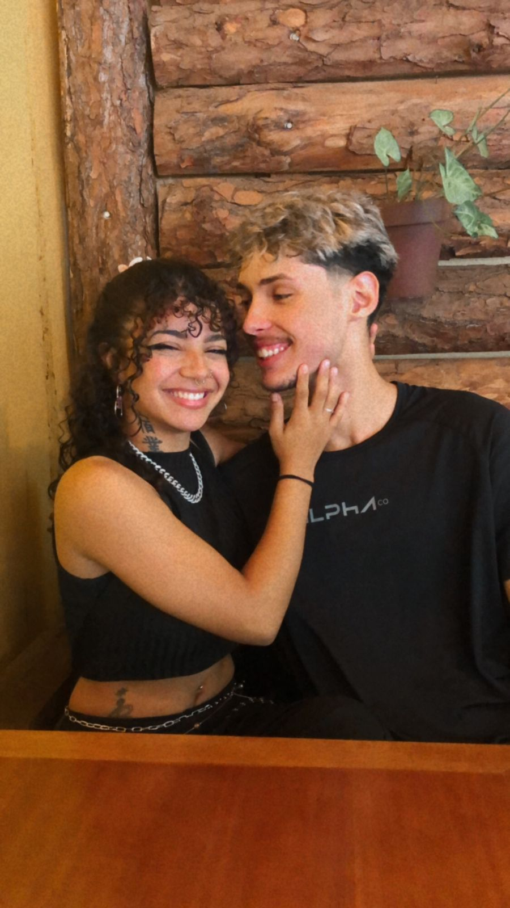
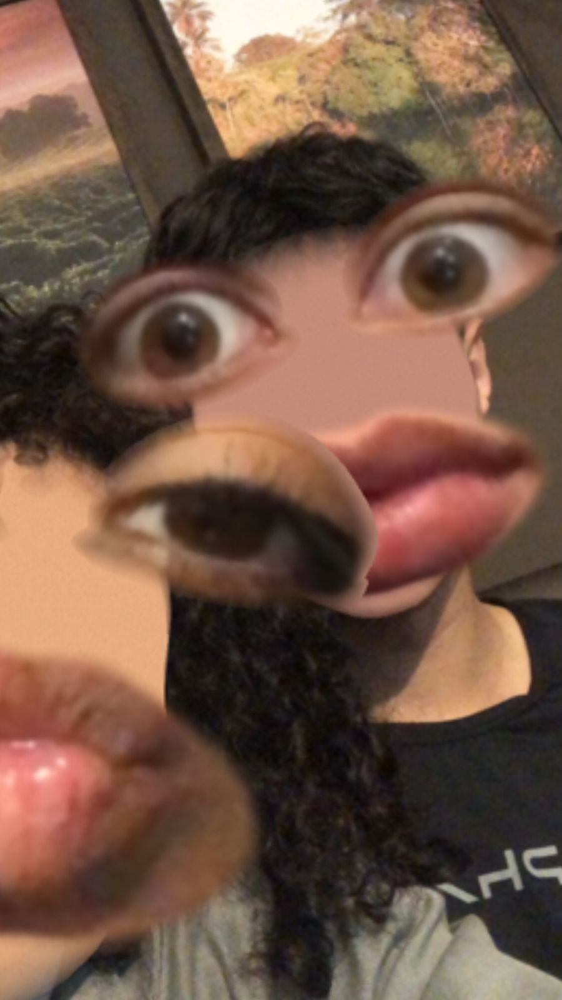
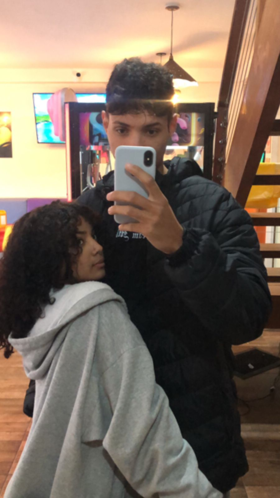
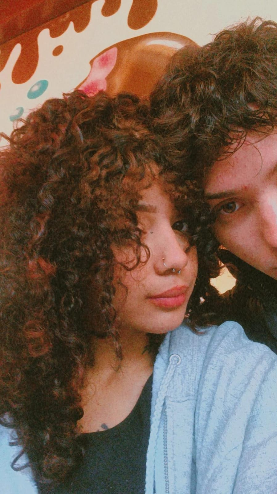
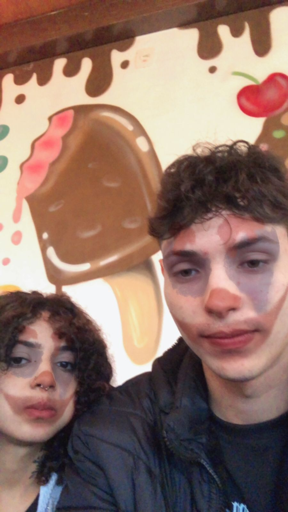
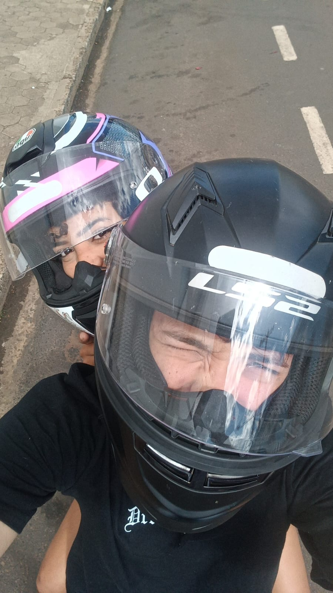